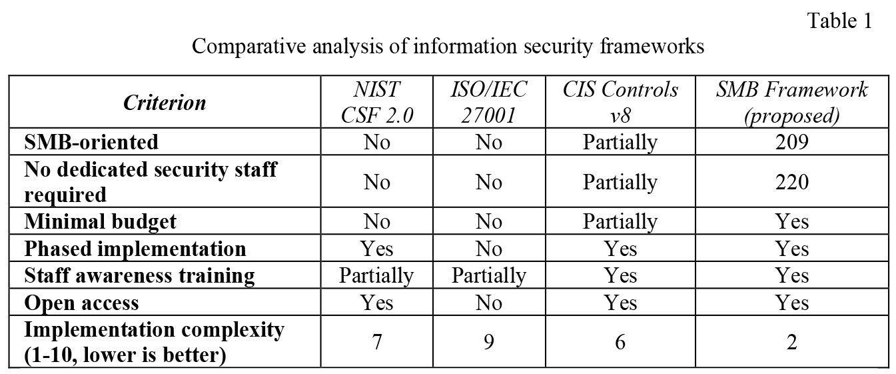

Cybersecurity for small and medium-sized businesses: a practical framework for organizations with limited resources
Conference: ITSec 2026
Conference URL: ITSec-2020
Article URLS: https://itsec-conf.org/ua/handle/17.itsec/article.2026962
UDK 004.056.53
Iurii Zhurov
SMB Cybersecurity Advisors LLC
iurii.zhurov@smbsecurityadvisors.com
Over the past decade, the number of cyber incidents targeting small and mediumsized businesses (SMBs) has grown at an accelerating rate. According to the Verizon Data Breach Investigations Report (2024), 46% of cyberattacks in the United States are directed at SMBs, while 60% of businesses that suffer a significant cyber incident cease operations within six months [1]. At the same time, the SMB segment — over 33 million enterprises accounting for 44% of U.S. GDP [2] — remains critically underprotected. The root cause lies not in the absence of standards, but in their inapplicability under conditions of limited resources.
Existing information security frameworks — NIST Cybersecurity Framework 2.0, ISO/IEC 27001:2022, and CIS Controls v8 — were designed primarily for large organizations with dedicated security departments, certified personnel, and substantial implementation budgets. For SMBs that typically lack any dedicated cybersecurity specialist, full implementation of these standards is practically unfeasible.
The objective of this paper is to develop and validate a practice-oriented framework for risk assessment and information security policy implementation, adapted to the specific organizational and resource constraints of SMBs, enabling achievement of a baseline cybersecurity posture without dedicated security personnel or significant financial investment.
Analysis of existing approaches revealed a systemic gap between academic standards and the real capabilities of SMBs. Specifically, ISO/IEC 27001 implementation requires 6 to 18 months and external consultants; NIST CSF, despite its declared scalability, provides no concrete tools for organizations without an IT department; CIS Controls v8 encompasses 18 control groups, of which only a subset is adapted to the SMB level [3-5].
Based on this analysis, the SMB Cybersecurity Framework: Assessment, Policy & Implementation was developed. The framework implements a four-stage methodology: (1) asset inventory and threat identification accounting for the enterprise's industry-specific context; (2) risk prioritization using a likelihood × impact matrix; (3) implementation of a minimum viable set of security policies — password policy, access control, data protection, and incident response; (4) a phased implementation roadmap with 30/90/180-day horizons and an employee security awareness program.
A distinguishing feature of the proposed approach is its prioritization of organizational over purely technical security measures. Practical consulting experience demonstrates that the vast majority of successful cyber incidents against SMBs are enabled by organizational vulnerabilities — absence of policies, inadequate access control, low staff awareness — rather than technical infrastructure deficiencies. Addressing organizational vulnerabilities is a necessary precondition for the effectiveness of any technical security controls.
A comparative analysis of the proposed framework against existing approaches is presented in Table 1.

The framework is distributed in open access and designed for independent implementation by SMB enterprises without external specialist involvement. Application of the approach across enterprises in multiple sectors confirmed its practical feasibility and effectiveness in achieving a baseline cybersecurity posture under constrained resources.
The following conclusions can be drawn from this research: 1) existing information security frameworks exhibit a systemic gap with the actual needs of SMBs, making their full implementation impractical under resource constraints; 2) the proposed framework provides a practically achievable path to baseline cybersecurity, bridging the gap between academic standards and the real capabilities of small businesses; 3) prioritizing organizational security measures over technical ones is the key principle of effective cybersecurity for SMBs; 4) a phased approach with a 30/90/180-day horizon enables enterprises to systematically build their security posture in accordance with available resources.
- Verizon Data Breach Investigations Report 2024. Basking Ridge: Verizon, 2024. 100 p.
- U.S. Small Business Administration. Small Business Facts. Washington: SBA, 2024.
- NIST Cybersecurity Framework 2.0. National Institute of Standards and Technology. Gaithersburg: NIST, 2024. 32 p.
- ISO/IEC 27001:2022. Information security management systems — Requirements. Geneva: ISO, 2022. 19 p.
- CIS Controls Version 8. Center for Internet Security. East Greenbush: CIS, 2021. 114 p.